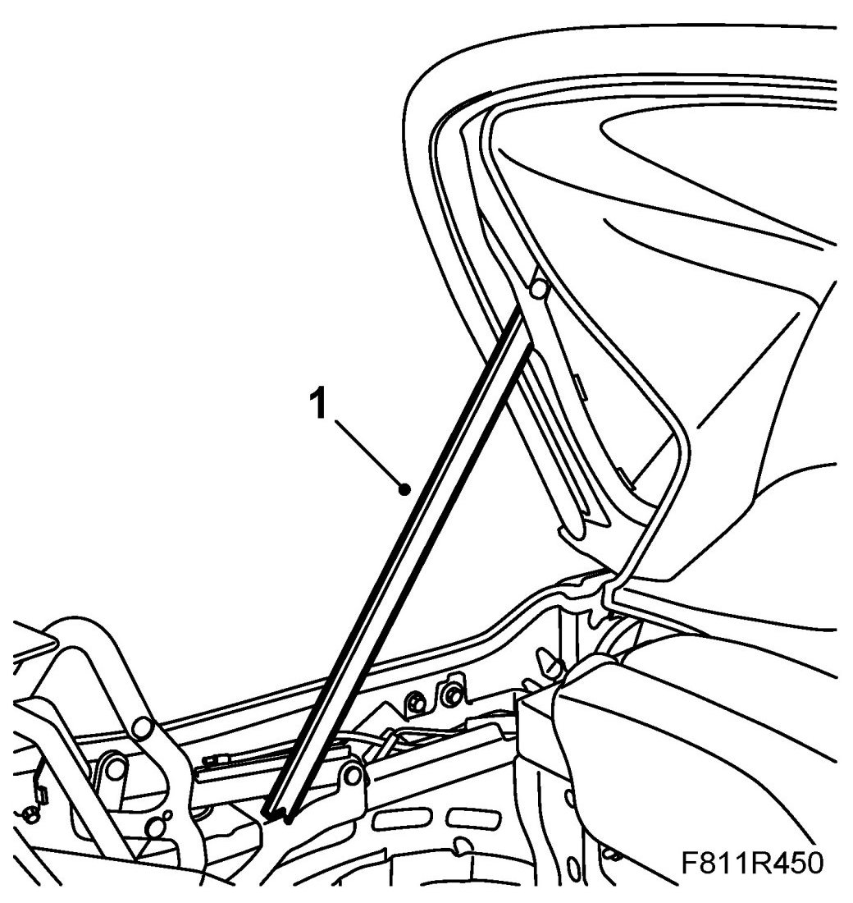
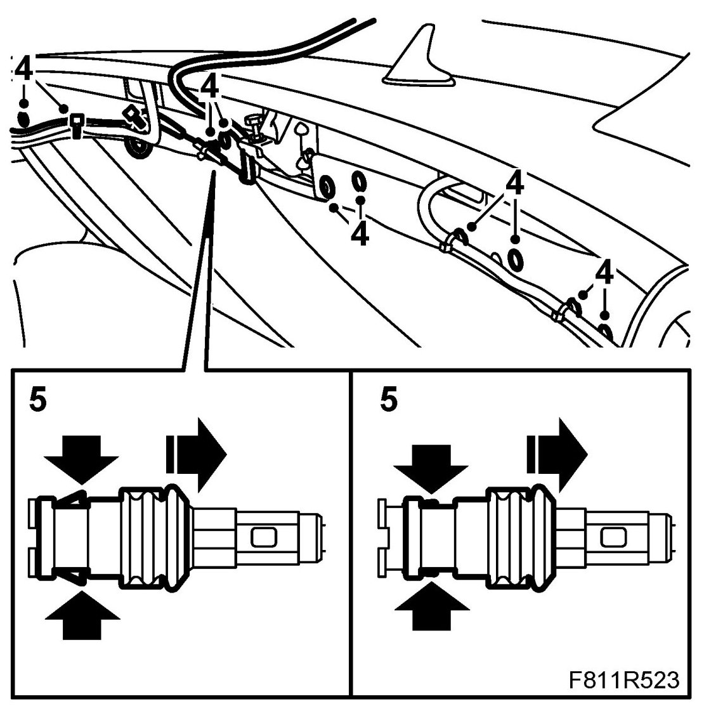
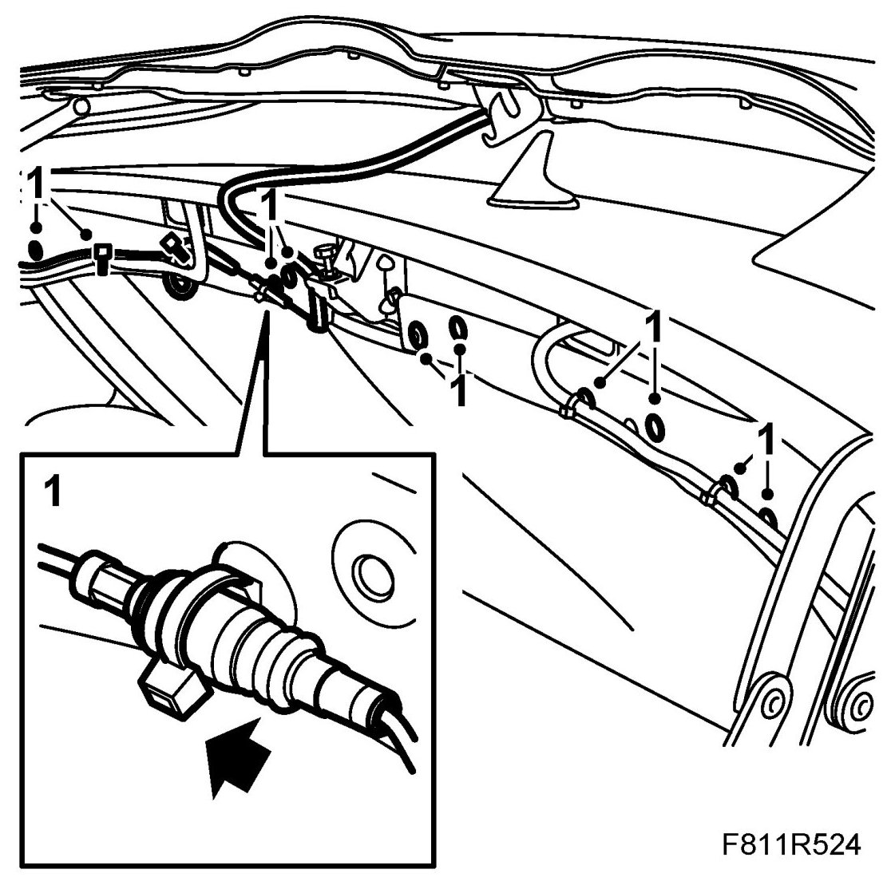
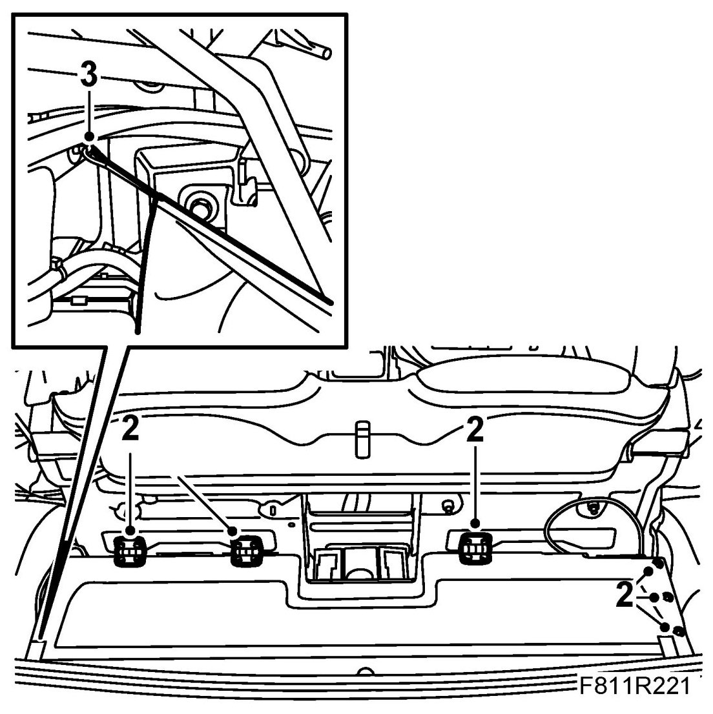

Soft Top Storage
Soft Top Storage
Removing
1. Open the soft top cover. Raise the sixth bow and support it with 82 93 847 Soft top support.

2. Unscrew the hinge nuts. Remove the bolts to the soft top storage drive.
3. Unhook the bands at the sides.
4. Remove the clips for the cable harness and the rear edge of the soft top storage.

5. Unplug the antenna connector by holding the antenna cable and at the same time pulling the finger grip towards the antenna cable.
6. Lift out the soft top storage.
Fitting
1. Place the soft top storage in mounting position. Fit the soft top storage rear clip and wiring harness.
Press together the antenna connector.

2. Place the front of the soft top storage in mounting position. Fit the bolts to the mechanism and the nuts on the hinges.

3. Fit the bands on the side. Lift up the soft top storage to check that the side bands are fitted correctly.
4. Remove the soft top support and close the soft top.
5. Operate the soft top to check the operation of the soft top storage and soft top.